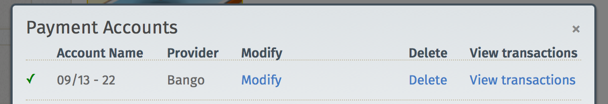

你是熱血的 Firefox OS 開發者，早已經開發了許多 App 準備讓自己的心血開花結果嗎？本文列出 Firefox Marketplace 目前已經正式運作收/付款服務的國家，並將持續更新相關情形，讓各位開發者都能順利將自己的 App 轉為實際收益。
Firefox Marketplace 付款服務均以「國家」為單位進行，且各國有不同的定價與付款方式。本文列出已開始 Marketplace 付款服務的國家，並附上進一步資訊的連結。
注意：另請參閱《制定 App 的價格》以了解價格點數，並可透過 API 取得。

各國的付款服務
下列為 Marketplace 目前提供付款服務的國家。我們亦隨時努力於更多國家提供付款服務。若需要現已支援付款服務的國家清單，可參閱《制定 App 的價格》。
App 支付
下列頁面將提供各國的付款服務資訊。另請注意，目前出帳作業僅支援當地貨幣；信用卡付款僅接受英鎊、美金、歐元計價。
進一步了解收費費率
若要進一步了解收費費率，請至 Firefox Marketplace 找到你自己的 App 頁面。點擊「相容性與付款 (Compatibility & Payments)」→「新增、管理或檢視您的付款帳號中的交易 (Add manage or view transactions for your payment account)」→「檢視交易 (View Transactions)」連結，即如下所示：

Mozilla 開發者社群網站 (MDN) 原文連結：Payments Status
你也可參閱中文版《付款服務狀態》，我們將根據原文而持續更新內容。另可參閱 MDN 上的更多 Firefox OS 或 Marketplace 相關文章。